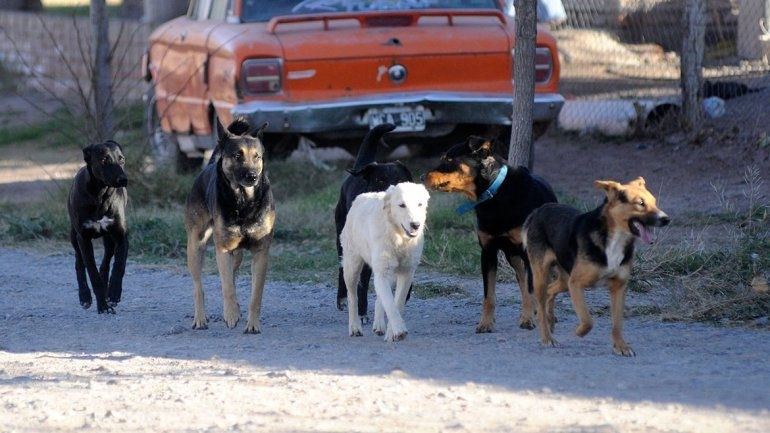

63
Perros identificados por la IA (individuos únicos)
▲ 9 nuevos
5
Jaurías activas detectadas
▲ 1 jauría nueva en Chacra XIII
41
Reportes recibidos (WhatsApp + cámaras trampa)
34 procesados automáticamente
3
Zonas en riesgo alto de ataque
2 estancias y 1 escuela alertadas
Mapa vivo de jaurías tocá una jauría para ver su ficha
Riesgo alto
Riesgo medio
Riesgo bajo
Cámara trampa
Escuela rural
▲ Estancia
- - - Trayectoria estimada
jaurías ficticias · lugares reales
Ficha de jauría J-02
Individuos re-identificados
Zona actual
Origen probable
Última detección
Detecciones (30 días)
Riesgo de ataque (7 días)
Ranking de intervención propuesto por la IA · validado por Zoonosis municipal y Asociación Rural
| # | Zona | Jauría | Riesgo | Acción recomendada | Responsable | Revisión humana |
|---|---|---|---|---|---|---|
| 1 | Esc. Agrotécnica Salesiana y estancias vecinas | J-02 | Alto | Alerta inmediata + refuerzo de guardia nocturna | Asociación Rural · Escuela | |
| 2 | Chacra XIII (barrio de origen) | J-02 · J-05 | Alto | Operativo de castración + recuperación de 2 perros con collar | Zoonosis municipal | |
| 3 | Chacra II · canal | J-05 | Alto | Instalar cámara trampa C-07 para confirmar jauría nueva | Equipo CENTINELA · CADIC | |
| 4 | Ea. María Behety | J-01 | Medio | Aviso preventivo; revisar alambrados del sector norte | Productor | |
| 5 | Cabo Peñas · estancias del sur | J-03 | Medio | Monitoreo; sin acción por ahora | Equipo CENTINELA |
Reporte vecinal por WhatsApp la IA de lenguaje convierte el mensaje en un registro
Tipo de evento
Cantidad de perros
Lugar
Hora
Indicio de dueño
Dirección
Jauría probable
Confianza del modelo
Registro agregado al mapa. Pendiente de validación por Zoonosis.
Cámara trampa C-03 la IA detecta, re-identifica y lee rasgos de cada perro: collar, pelaje, condición

RG-031 · 88% · sin collar · flaco
RG-017 · 94% · sin collar · pelaje sucio
RG-040 · 79%
Nuevo RG-064 · pelaje enredado
RG-021 · 96% · collar: SÍ (azul)
RG-052 · 90% · sin collar
06:40 · 4°C · C-03 · CHACRA XIII · CENTINELA
Pendiente de análisis
Recorrido de la solución rojo = tarea de la IA · verde = decisión humana
1
Vecino, productor o cámara trampa envía foto o mensajeComunidad2
Se guarda con fecha y ubicaciónSistema3
Visión: detecta perros y re-identifica individuosIA4
Lenguaje: convierte el texto en un registroIA5
Agrupa jaurías, zonas calientes y riesgo de ataqueIA6
Zoonosis y Asociación Rural validan o corrigenPersonas7
Tablero + alerta por WhatsApp a estancias y escuelasSistema8
Castración, recuperación de perros con dueño, refuerzo de guardiaPersonas9
Cada acción registrada mejora el modeloIA